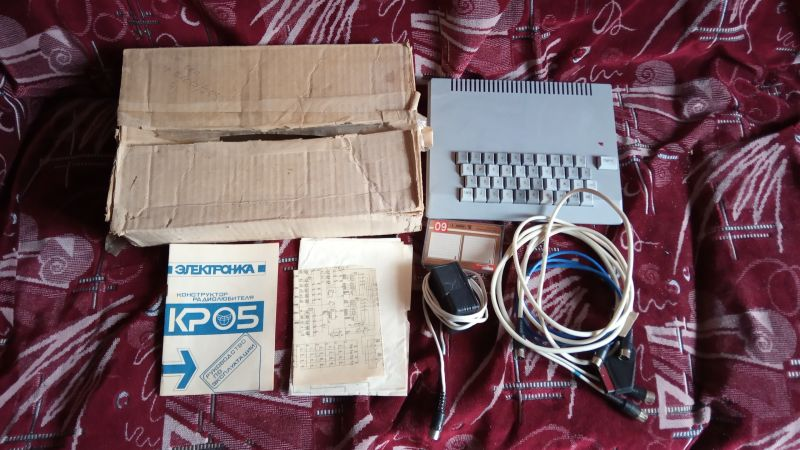

| Годы производства | С 1991 года до ?1994 года? |
| Производился | Ульяновский Радиоламповый Завод |
| Процессор | КР1858ВМ1 |
| Частота | 4 МГц |
| Скорость | 105% |
| ОЗУ | 48КБ |
| ПЗУ | 16КБ |
| Преемущества | Дешевизна производства, но при этом относительно качественный продукт. |
| Недостатки | Нестатичное изображение на выходе, отсутствие кнопки включения, внешний блок питания с "коробкой" из которой торчат вилки, отсутствие операторов на клавишах, встроенный динамик. |
Конструктор Радиолюбителя Электроника КР-05
Конструктор Радиолюбителя Электроника КР-05 - Советский/Российский клон ZX Spectrum 48k, произведенный Ульяновским Радио-Ламповым Заводом, а также возможно на предприятии "Электроприбор" в Чебоксарах и "Копир" в г. Козьмодемьянск. Производился скорее всего и в виде собранного полноценного компьютера, и виде непосредственно плат и деталей для самостоятельной сборки компьютера, что вероятно могло обеспечивать более дешевую цену компьютеру. В нашем музее имеется экземпляр с номером 71, и был выпущен в июне 1993 года, а продан 27 июля 1993 года.Небольшое пояснение по поводу названия:
КР - Компьютер Радиолюбительский. Под подобным названием в СССР/а позднее в России выпускались промышленные компьютеры совместимые со стандартом Радио 86РК, в частности Электроника КР-01,02,03 и 04 являлись именно набором( а иногда и полноценным компьютером ) деталей для сбора компьютера совместимого с этим стандартом. А КР-05 являлся единственным в этой серии, который являлся клоном ZX Spectrum, и единственное что его роднит с предыдущими - такой же серийный выпуск деталей и плат для сборки и те же места производства.Комплектация этого клона представлена в полном объеме:
КоробкаКомпьютер
Блок Питания
Руководство Пользователя
Кабель чтение/запись для подключения к магнитофону
DIN-5 кабель для подключения к телевизору
Самодельный кабель SCART для подключения к современному телевизору
Кассета с программами
Схемы электрические и монтажные
Основная информация:
К большому сожалению информации о данном клоне имеется немного, в силу того что Ульяновский Радиоламповый завод ныне не существует, и узнать какие-то подробности его разработки не представляется возможным. Поэтому какая-то информация представленная здесь, может быть не совсем точна, поскольку основывается на домыслах по уже имеющейся информации. Если кто-то может помочь нам с точной информацией - обращайтесь в личные сообщения (ссылка есть во вкладке Разыскивается).Если судить по концепции КР-компьютеров, то создателями предполагалось сделать максимально простой, дешёвый и массовый клон ZX Spectrum 48k.
Клон скорее всего изначально разработан в 1991 году, на основе схемы Ленинград-1 Сергея Зонова, однако с некоторыми доработками, например ПЗУ представлено не единой микросхемой, а разбито на 8 отдельных микросхем, учитывая что ПЗУ имеет 16 КБ то каждая имеет по 2 КБ памяти, может быть это было обусловлено отсутствием других деталей. В качестве процессора используется отечественный аналог КР1858ВМ1, и поскольку он был сделан на основе ГДР-овского аналога, то частота в нём несколько выше, нежели на обычном Z80.
Компьютер имеет своеобразный 3 в одном, на одной и той же плате сделана и клавиатура, и динамик и вся начинка самого компьютера, вероятно так сделано для удешевления производства.
Можно точно сказать, что компьютер имеет оригинальный дизайн, имел серый и темно-серый цвета оформления. И возможно мог иметь два разных оформления клавиатуры - с операторами и без них.
Клавиатура имеет 40 клавиш, их расположение аналогично классическому 48k.
ПЗУ имело лишь одно незначительное отличие - при включении выдаётся другой текст - < 1991 КР-05 >.
Имеется также информация о том, что прошивка также могла быть другой - я видел вариант с прошивкой Didaktik Gama.
Звук компьютера выводится на встроенный динамик.
Блок питания, который предназначается для этого компьютера имеет форму обычного AC-адаптера, однако в этом кроется его главный недостаток - коробка с торчащими короткими вилками не радует глаза, будем честными.
Мануал, в данном случае содержит лишь комплектацию, краткое руководство по обращению + описание команд, используемых в компьютере.
Кабель чтения и записи с ленты имеет, как и в случае со Спектр 48 разделенные штекеры для записи и чтения соединенные для подключения в один слот.
Кабель для подключения к телевизору представлен обычным DIN5 кабелем с двух сторон, вероятно предполагая что пользователь имеет уже доработанный телевизор с нужным слотом для подключения.
Поскольку таким образом на современных условиях запустить и посмотреть компьютер невозможно, то пришлось сделать самодельный кабель SCART для подключения.
Кассета с программами, что была в комплекте представлена той же самой фирмой ТАСМА, что уже была на клонах вроде РОБИ и Хоббит. Но в данном случае на одной стороне мы имеем всего 4 игры, которые продублированны два раза, кроме последней. Думаю так было сделано на случай, если одна копия игры записалась плохо. Просто возьми и загрузи другую, в таком случае.
TF-Copy88 - Это классическая программа для копирования.
Fred Loader - Неплохая бродилка в лабиринте.
Karkout - Боковой Арканоид.
Video Pool - Бильярд.
Клон имеет среднюю совместимость с оригиналом.
Разъемы:
~15V - разъем для подключения блока питания. Насколько я понял никаких 15 вольт там нету, а скорее всего стандартные 5, потому как даже если подать 9 вольт, то уже перестает работать, но на удивление запускается.IN\OUT - разъем для записи и чтения с магнитофона. Распайка нестандартная, запись и чтение перепутаны местами, однако как я понял так было изначально задумано. Если у вас сохранился кабель из комплекта то большой проблемой нестандартная распайка не будет.
GAME - вот тут посложнее, порт для подключения джойстика, однако же я так и не понял для какого именно типа, Sinclair или Kempston. Потому что ни тот ни другой не работали.
VIDEO - вполне логично что это видеовыход типа RGB. Обычное дело для отечественных клонов ZX.
Конфузы, связанные с нумерацией и производителем:
Судя по информации имевшейся под комментариями обзора на данный клон - тираж был крайне небольшим, вероятно меньше 200 экземпляров. Максимально возможно увиденный номер выпуска Ульяновского Завода был 138. В нашем музее представлен экземпляр с номером 71, он был выпущен в июне 1993 года, а продан 27 июля 1993 года. Известно что экземпляр 126 был выпущен в июне 1994 года, что путём нехитрых подсчётов показывает что за 1991-1993 год выпустили предположительно 75 единиц, то есть получается в среднем один клон в две недели, а за 1993-1994 год было сделано ~55 единиц, то есть штука в неделю - скорее всего производство было штучным, и может быть выполнялось по заказу.Однако не до конца ясно, т.к. в ступор вводит экземпляр с номером 803 выпущенный в апреле 1993 года, найденный вот здесь(нажми на текст). Также в ступор вводит найденный на аукционе экземпляр с номером 247( нажми на текст ), с отличающейся наклейкой, сделанной, похоже что, на печатной машинке, что может свидетельствовать о том, что подобные клоны выпускались также и на других предприятиях.
{kind=link}
Так как компьютеры серии КР выпускались на трёх разных заводах - "Электроприбор" в г. Чебоксары, "Копир" в г. Козьмодемьянск и Ульяновским Радиоламповым заводом, можно предположить что КР-05 также выпускались и на этих двух предприятиях, с чем вероятно и может быть связана путаница с нумерацией клонов. Ну и учитывая относительную географическую близость всех трёх заводов, то скорее всего такое и правда имело место быть.
Однако подтвердить или опровергнуть эту информацию поможет только обращение на эти два предприятия, возможно мы напишем туда письма.
Ссылки:
https://www.youtube.com/watch?v=FfX1nVfE8mQ - Видеообзор данного клона, который сделал тот же, кто писал этот текст. Информация может немного отличаться от того что написано, в силу того что обзору уже почти 3 года.http://superbrain1997.blogspot.com/2017/02/superbrain1997-Elektronika-KP-05-zx-spectrum-48k.html - текстовый обзор клона, имеющий немного больше фотоматериалов. В дальнейшем будет приведён в нормальный вид.